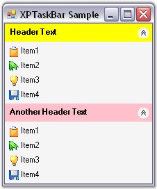

The following step by step procedure helps you to create XPTaskBar programmatically.
1. Add the namespace Syncfusion.Windows.Forms.Tools.
|
[C#]
using Syncfusion.Windows.Forms.Tools; |
|
[VB.NET]
Imports Syncfusion.Windows.Forms.Tools |
2. Drag and drop an ImageList control onto the form and add images into it through the Images Collection Editor.
3. Create instances for XPTaskBar control, XPTaskBar Box1, XPTaskBar Box2 and ImageList control.
|
[C#]
private Syncfusion.Windows.Forms.Tools.XPTaskBar xpTaskBar1; private System.Windows.Forms.ImageList imageList1; private Syncfusion.Windows.Forms.Tools.XPTaskBarBox xpTaskBarBox1; private Syncfusion.Windows.Forms.Tools.XPTaskBarBox xpTaskBarBox2;
this.xpTaskBar1 = new Syncfusion.Windows.Forms.Tools.XPTaskBar(); this.imageList1 = new System.Windows.Forms.ImageList(this.components); this.xpTaskBarBox1 = new Syncfusion.Windows.Forms.Tools.XPTaskBarBox(); this.xpTaskBarBox2 = new Syncfusion.Windows.Forms.Tools.XPTaskBarBox(); |
|
[VB.NET]
Private xpTaskBar1 As Syncfusion.Windows.Forms.Tools.XPTaskBar = New XPTaskBar() Private imageList1 As System.Windows.Forms.ImageList Private xpTaskBarBox1 As Syncfusion.Windows.Forms.Tools.XPTaskBarBox Private xpTaskBarBox2 As Syncfusion.Windows.Forms.Tools.XPTaskBarBox
Me.xpTaskBar1 = New Syncfusion.Windows.Forms.Tools.XPTaskBar() Me.imageList1 = New System.Windows.Forms.ImageList(Me.components) Me.xpTaskBarBox1 = New Syncfusion.Windows.Forms.Tools.XPTaskBarBox() Me.xpTaskBarBox2 = New Syncfusion.Windows.Forms.Tools.XPTaskBarBox() |
4. Add XPTaskBar to the control collection.
|
[C#]
this.Controls.Add(this.xpTaskBar1); |
|
[VB.NET]
Me.Controls.Add(Me.xpTaskBar1) |
5. Set the ImageList to XPTaskBar Box1 and XPTaskBar Box2.
|
[C#]
this.xpTaskBarBox1.ImageList = this.imageList1; this.xpTaskBarBox2.ImageList = this.imageList1; |
|
[VB.NET]
Me.xpTaskBarBox1.ImageList = Me.imageList1 Me.xpTaskBarBox2.ImageList = Me.imageList1 |
6. Set Header BackColor, Text and Item BackColor for XPTaskBar Box1 and XPTaskBar Box2.
|
[C#]
this.xpTaskBarBox1.HeaderBackColor = Color.Yellow; this.xpTaskBarBox1.Text = "Header Text"; this.xpTaskBarBox1.ItemBackColor = Color.WhiteSmoke;
this.xpTaskBarBox2.HeaderBackColor = Color.Pink; this.xpTaskBarBox2.Text = "Another Header Text"; this.xpTaskBarBox2.ItemBackColor = Color.WhiteSmoke; |
|
[VB.NET]
Me.xpTaskBarBox1.HeaderBackColor = Color.Yellow Me.xpTaskBarBox1.Text = "Header Text" Me.xpTaskBarBox1.ItemBackColor = Color.WhiteSmoke
Me.xpTaskBarBox2.HeaderBackColor = Color.Pink Me.xpTaskBarBox2.Text = "Another Header Text" Me.xpTaskBarBox2.ItemBackColor = Color.WhiteSmoke |
7. Add XPTaskBar Items to the XPTaskBar Box1 and XPTaskBar Box2.
|
[C#]
this.xpTaskBarBox1.Items.AddRange(new Syncfusion.Windows.Forms.Tools.XPTaskBarItem[] { new Syncfusion.Windows.Forms.Tools.XPTaskBarItem("Item1", System.Drawing.Color.Empty, 0, null, "", true, true, "XPTaskBarItem0", new System.Drawing.Font("Microsoft Sans Serif", 8.25F), 0), new Syncfusion.Windows.Forms.Tools.XPTaskBarItem("Item2", System.Drawing.Color.Empty, 1, null, "", true, true, "XPTaskBarItem1", new System.Drawing.Font("Microsoft Sans Serif", 8.25F), 0), new Syncfusion.Windows.Forms.Tools.XPTaskBarItem("Item3", System.Drawing.Color.Empty, 2, null, "", true, true, "XPTaskBarItem2", new System.Drawing.Font("Microsoft Sans Serif", 8.25F), 0), new Syncfusion.Windows.Forms.Tools.XPTaskBarItem("Item4", System.Drawing.Color.Empty, 3, null, "", true, true, "XPTaskBarItem3", new System.Drawing.Font("Microsoft Sans Serif", 8.25F), 0)});
this.xpTaskBarBox2.Items.AddRange(new Syncfusion.Windows.Forms.Tools.XPTaskBarItem[] { new Syncfusion.Windows.Forms.Tools.XPTaskBarItem("Item1", System.Drawing.Color.Empty, 0, null, "", true, true, "XPTaskBarItem4", new System.Drawing.Font("Microsoft Sans Serif", 8.25F), 0), new Syncfusion.Windows.Forms.Tools.XPTaskBarItem("Item2", System.Drawing.Color.Empty, 1, null, "", true, true, "XPTaskBarItem5", new System.Drawing.Font("Microsoft Sans Serif", 8.25F), 0), new Syncfusion.Windows.Forms.Tools.XPTaskBarItem("Item3", System.Drawing.Color.Empty, 2, null, "", true, true, "XPTaskBarItem6", new System.Drawing.Font("Microsoft Sans Serif", 8.25F), 0), new Syncfusion.Windows.Forms.Tools.XPTaskBarItem("Item4", System.Drawing.Color.Empty, 3, null, "", true, true, "XPTaskBarItem7", new System.Drawing.Font("Microsoft Sans Serif", 8.25F), 0)}); |
|
[VB.NET]
Me.xpTaskBarBox1.Items.AddRange(New Syncfusion.Windows.Forms.Tools.XPTaskBarItem() {New Syncfusion.Windows.Forms.Tools.XPTaskBarItem("Item1", System.Drawing.Color.Empty, 0, Nothing, "", True, _ True, "XPTaskBarItem0", New System.Drawing.Font("Microsoft Sans Serif", 8.25F), 0), New Syncfusion.Windows.Forms.Tools.XPTaskBarItem("Item2", System.Drawing.Color.Empty, 1, Nothing, "", True, _ True, "XPTaskBarItem1", New System.Drawing.Font("Microsoft Sans Serif", 8.25F), 0), New Syncfusion.Windows.Forms.Tools.XPTaskBarItem("Item3", System.Drawing.Color.Empty, 2, Nothing, "", True, _ True, "XPTaskBarItem2", New System.Drawing.Font("Microsoft Sans Serif", 8.25F), 0), New Syncfusion.Windows.Forms.Tools.XPTaskBarItem("Item4", System.Drawing.Color.Empty, 3, Nothing, "", True, _ True, "XPTaskBarItem3", New System.Drawing.Font("Microsoft Sans Serif", 8.25F), 0)})
Me.xpTaskBarBox2.Items.AddRange(New Syncfusion.Windows.Forms.Tools.XPTaskBarItem() {New Syncfusion.Windows.Forms.Tools.XPTaskBarItem("Item1", System.Drawing.Color.Empty, 0, Nothing, "", True, _ True, "XPTaskBarItem4", New System.Drawing.Font("Microsoft Sans Serif", 8.25F), 0), New Syncfusion.Windows.Forms.Tools.XPTaskBarItem("Item2", System.Drawing.Color.Empty, 1, Nothing, "", True, _ True, "XPTaskBarItem5", New System.Drawing.Font("Microsoft Sans Serif", 8.25F), 0), New Syncfusion.Windows.Forms.Tools.XPTaskBarItem("Item3", System.Drawing.Color.Empty, 2, Nothing, "", True, _ True, "XPTaskBarItem6", New System.Drawing.Font("Microsoft Sans Serif", 8.25F), 0), New Syncfusion.Windows.Forms.Tools.XPTaskBarItem("Item4", System.Drawing.Color.Empty, 3, Nothing, "", True, _ True, "XPTaskBarItem7", New System.Drawing.Font("Microsoft Sans Serif", 8.25F), 0)}) |
8. Finally add the created XPTaskBar Boxes to the XPTaskBar control.
|
[C#]
this.xpTaskBar1.Controls.Add(this.xpTaskBarBox1); this.xpTaskBar1.Controls.Add(this.xpTaskBarBox2); |
|
[VB.NET]
Me.xpTaskBar1.Controls.Add(Me.xpTaskBarBox1) Me.xpTaskBar1.Controls.Add(Me.xpTaskBarBox2) |

Figure 937: XPTaskBar control created Through Code
See Also